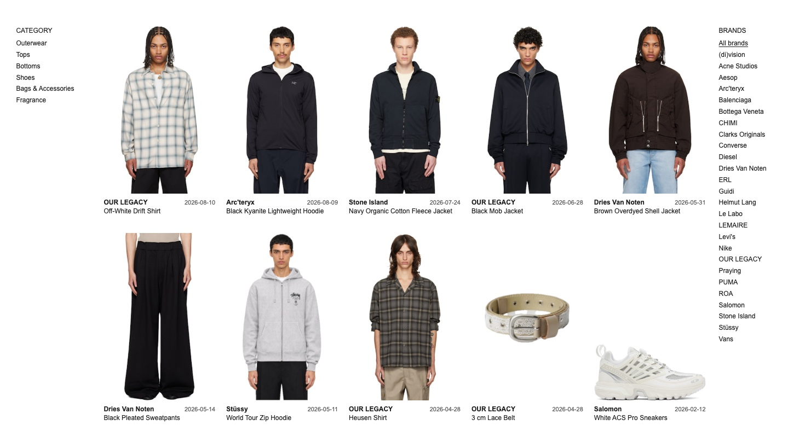

My Wardrobe
I enjoy shopping for clothes. I’ve bought a lot over the years and gradually settled into a style of my own. I made this database to keep a record of what I chose along the way.
As I get older, I’m more selective about what goes into my wardrobe. I have to really like it, it has to suit me, and it has to feel comfortable.
Take shoes. I used to like lace-ups. Now I usually look for slip-ons, and my first question is whether I can put them on in five seconds.
With clothes, I ask whether a piece will still feel like me as I get older. I like the idea of buying a jacket now and still reaching for it years later, even as the rest of my wardrobe changes. That’s what taking the long view means to me.

Studying away from home has meant moving often, so I try to keep my wardrobe small enough to take with me. I want to dress the way I like with as few pieces as possible. These days, I buy fewer pieces and give myself room to spend more on each one.
What I Kept

I kept about four in ten pieces in 2024 and just over half in 2025. This year I’ve kept eight of the ten I bought so far.
What I Spent

I was most into shopping in 2024 and 2025. I had plenty of free time back then, and I spent a lot of it looking at clothes. In 2026 I threw myself into my projects, and I’ve hardly shopped since.
When I Shopped
| Year | Jan | Feb | Mar | Apr | May | Jun | Jul | Aug | Sep | Oct | Nov | Dec |
|---|---|---|---|---|---|---|---|---|---|---|---|---|
| 2021 | — | — | — | — | — | — | — | — | — | — | — | 1 |
| 2022 | 0 | 0 | 0 | 1 | 0 | 0 | 1 | 0 | 0 | 0 | 0 | 0 |
| 2023 | 1 | 0 | 0 | 0 | 0 | 0 | 0 | 0 | 0 | 0 | 0 | 2 |
| 2024 | 1 | 2 | 1 | 0 | 1 | 0 | 1 | 2 | 2 | 4 | 2 | 2 |
| 2025 | 0 | 1 | 1 | 3 | 5 | 4 | 4 | 0 | 4 | 0 | 1 | 3 |
| 2026 | 2 | 2 | 0 | 0 | 2 | 1 | 1 | 2 | 0 | 0 | 0 | — |
2025 was my busiest year in this record, with 26 orders. Five of them were in May.